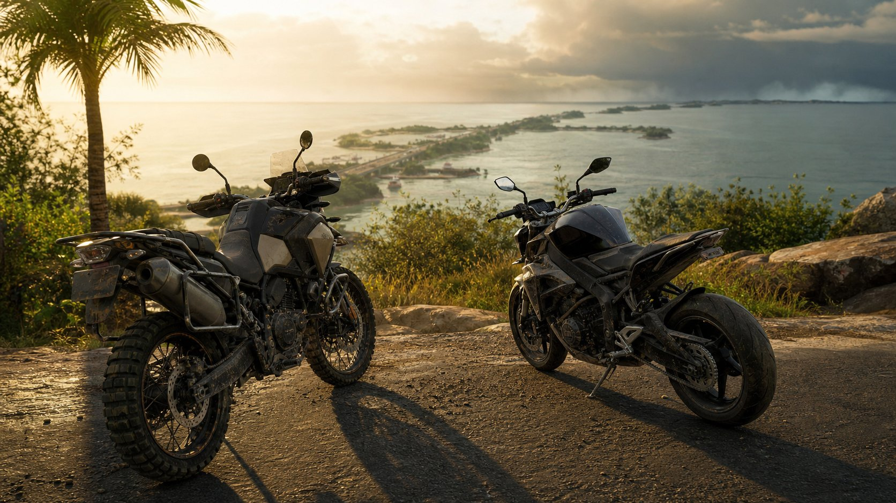
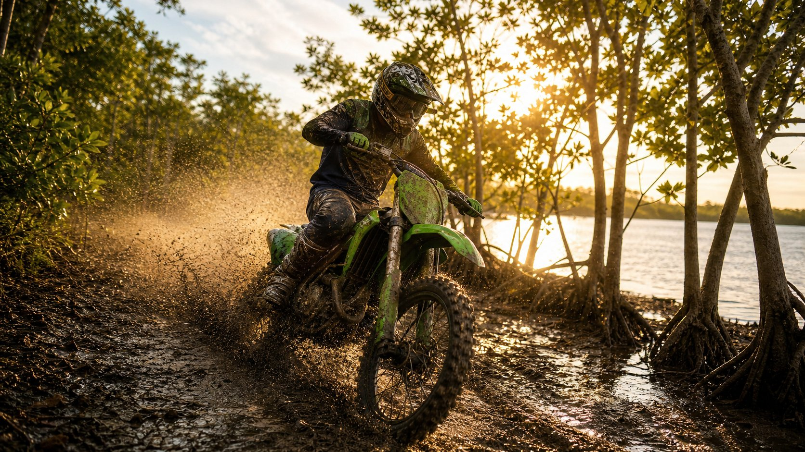
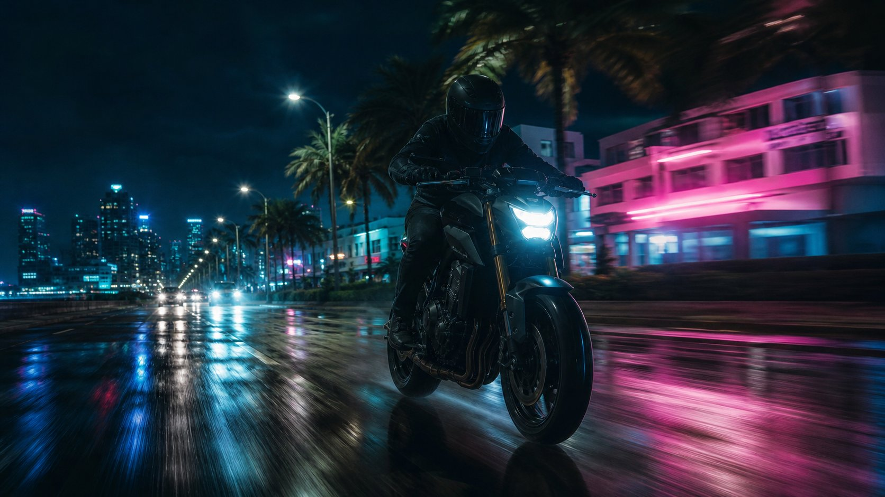

Dinka Enduro
Un modèle explicitement nommé dans l’offre de véhicules de Safehouse. Le nom de marque fictif est le repère fiable; la page Rockstar ne publie pas ici puissance, vitesse, réglages ni fiche technique.

MOTOS · DINKA ENDURO · AVIS DE REVIEWS & COMMUNAUTÉ
Le Dinka Enduro est nommé dans le contenu Rockstar; les avis récents sur le pilotage ne sont pas unanimes. Voici les repères utiles sans inventer de stats ni de roster.
Dinka Enduro figure dans les véhicules liés au Safehouse dans le contenu d’édition Rockstar. Les trailers et captures montrent également des motos et des scènes de motocross. Les noms lus dans des listes de fans — y compris marque, modèle ou inspiration réelle — doivent rester des identifications de communauté tant que le nom n’est pas lisible dans une source Rockstar.
Un modèle explicitement nommé dans l’offre de véhicules de Safehouse. Le nom de marque fictif est le repère fiable; la page Rockstar ne publie pas ici puissance, vitesse, réglages ni fiche technique.
Des motos sont visibles dans les matériaux Rockstar. Leur apparence indique une présence à l’écran, mais une capture ne certifie pas le nom du modèle, la jouabilité dans chaque scène ni le total de motos.
Les retours critiques sont mitigés sur le feeling des motos. IGN décrit une prise en main « upright and stiff » par rapport aux précédents GTA; d’autres reviewers recommandent des configurations rapides et saluent la conduite. Ne confonds pas ces impressions avec une mesure commune : teste plusieurs motos et garde une marge de sécurité, surtout en circulation.
| Élément | Statut | Ce qu’il faut éviter d’affirmer |
|---|---|---|
| Dinka Enduro | Nom lié au contenu d’édition Rockstar. | Vitesse, classe exacte de pilotage ou emplacement garanti sans test vérifié. |
| Autres motos des trailers | Véhicules visibles; plusieurs noms sont assignés par bases et vidéos de fans. | Ne pas appeler chaque silhouette un modèle « confirmé par Rockstar ». |
| Kickstand, câbles, détails techniques | Commentaires d’observateurs Reddit sur des images promotionnelles. | Observation communautaire sur une image fixe, pas preuve de mécanique de conduite. |
| Customisation moto | Les critiques évoquent des ateliers de customisation de véhicules en général. | La liste des pièces, effets sur les stats et différences par moto reste à valider en jeu. |
Illustrations éditoriales générées pour ce guide : elles ne sont pas des captures Rockstar et ne confirment ni l’apparence exacte d’un objet, ni un modèle ou des statistiques. Les noms mentionnés dans les légendes viennent séparément des sources textuelles citées.

